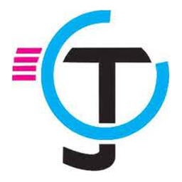

Privacy Policy
This policy explains what information the Tiljay CF Pro app and website (the "app") collect, why, who can see it, and the choices you have. The app is provided by Tiljay Computer Forms Production ("we", "us") for its own employees. It records daily production work and shows it to the team. It is not a public service: accounts are created only by the company's administrator.
Information we collect
| Information | What it is | Why we use it |
|---|---|---|
| Name and department | Your name and the department(s) you work in, entered by the administrator | To show your tasks and your work on the right screens |
| Login | Your username and password, set by the administrator. Passwords are stored only in protected (hashed) form. | To sign you in and show you only your own information |
| Profile photo (optional) | A photo the administrator may add for you | To show your picture next to your work on the team screens |
| Work records | The tasks assigned to you, the counts you send for each day, and whether they were approved, changed or rejected (with the administrator's note) | To record production and calculate performance |
| Notifications and device token | Messages sent to you in the app, and a technical token from Google Firebase that lets us send notifications to your phone | To tell you about new tasks and decisions on your counts |
| Technical logs | Standard server records such as IP address, time and browser type, kept by our hosting providers | To keep the service secure and working |
The app does not collect your location, contacts, messages, calendar, microphone or camera recordings. It has no advertising and no tracking or analytics for marketing, and it does not read other data on your phone.
Who can see your information
- You: your own tasks, counts, performance history and notifications.
- The company's administrators: everyone's information, to approve counts and manage the team.
- Colleagues at the factory: the team screens (TVs) inside the factory show employees' names, photos, departments and daily counts. They are signed in with company TV accounts that can only view.
We do not sell your information and do not share it with anyone for advertising.
Service providers
We use these companies to run the app. They process the information only on our behalf:
- Supabase: database and sign-in (stores the information above)
- Vercel: hosts the website the app opens
- Google Firebase Cloud Messaging: delivers notifications to your phone
Their servers may be outside Sri Lanka. We may also disclose information if the law requires it.
How we protect it
All information travels over encrypted connections (HTTPS). Access is controlled in the database itself: each login can reach only what its role allows. Employees see only their own records, TV accounts can only view, and only administrators can make changes.
How long we keep it
Work records are kept as the company's production records for as long as they are needed for that purpose. When you leave, the administrator removes your login and you can no longer sign in. Your past work records may be kept as part of the company's records unless you ask for them to be deleted (see below). Notifications and device tokens are removed when no longer needed, for example when you sign out.
Your choices and rights
- Ask to see, correct or delete your information, or to have your account removed: contact the administrator or use the email below.
- Turn notifications off at any time in your phone's settings.
- Signing out removes your phone from notifications.
We handle requests in line with Sri Lanka's Personal Data Protection Act, No. 9 of 2022.
Children
The app is only for employees aged 18 or over and is not directed at children.
Changes to this policy
If we change this policy we will update this page and its effective date. Important changes will also be announced in the app.
Contact
Tiljay Computer Forms Production
Email: CONTACT_EMAIL